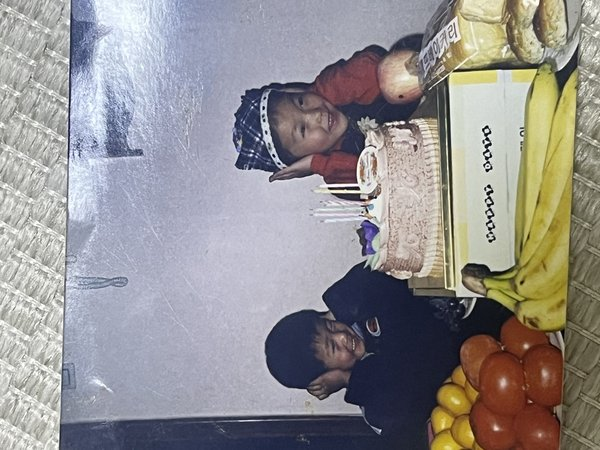

우당탕!!!
다은 다빈 도쿄 여행기
러닝하고, 목욕하고, 맛있는 거 먹고,
여유롭게 걷는 3박 4일
2026. 04. 29 — 05. 02 · 호텔 이스트21
Airport
나리타 생존 가이드
7C1175 · 09:45 ICN → 12:15 NRT · 예약번호 KYHYNM
Step 1
입국심사 + 짐
- 골든위크라 30~50분
- 13:00~13:20 밖으로 나옴
Step 2
리무진버스 현장 구매
- 카운터에서 "T-CAT" → 3,100엔
- 다음 출발편 바로 탑승 (55분)
Step 3
T-CAT → 호텔
- 택시 10분 (~1,000엔)
- 호텔 도착: 오후 3시 반
귀국 5/2: 13:30 호텔 → T-CAT → 나리타 17:15 (7C1172)
Day 1 · 4/29
숙소만 무사히 가자
체크인 후 3시 반. 가까운 곳에서 여유롭게.
오후
옵션 1
☕ 나카메구로 강변 산책
★ 4.4 나카메구로 · ★ 4.5 스타벅스 로스터리
- 메구로 강변 카페 홉핑 (숙소 20분)
- 스타벅스 리저브 로스터리 — 세계 최대 규모
- 다이칸야마 츠타야 서점 — 세계에서 가장 아름다운 서점
- 💡 강변 3km는 Day 2 아침 러닝 코스로도 딱!
구글맵
옵션 2
☕ 키요스미시라카와 (숙소 도보권)
★ 4.3 키요스미 정원 · ★ 4.4 Blue Bottle
- 키요스미 정원 — 조용한 일본 정원. 150엔
- Blue Bottle Coffee 일본 1호점
- 피곤한 첫날에 딱. 도보 15분
구글맵
저녁
옵션 1
이세히로 교바시본점
★ 3.7 Tabelog · 1921년 창업
구글맵
옵션 2
유라쿠초 가드시타
★ 현지 샐러리맨 천국
구글맵
Day 2 · 4/30
러닝 & 요가 + 오모테산도
아침 코스 (러닝→카페→아침밥) → 오후 여유 → 저녁 맛집
🏃☕🍳 아침 코스 A — 황거 (나눔 1일차)
🏃 황거 5km → ☕ DILL COFFEE / 글릿치 커피 → 🍳 Walkabout
- 러닝 — 6:30 황거 코스 5km. 신호 없이 한 바퀴. 도쿄 대표 코스
- 카페 — DILL COFFEE PARLOR · 글릿치 커피 & 로스터스 (진바초 일대)
- 아침밥 — Walkabout (진바초). 러닝 후 브런치
러닝 ·
DILL ·
글릿치 ·
Walkabout
🏃☕🍳 아침 코스 B — 도요스 수변 (숙소 근처)
🏃 도요스 구루리 공원 → ☕ 블루보틀 키요스미 → 🍳 츠키지 외시장
- 러닝 — 6:30 숙소 바로 출발. 도요스 수변 5~8km. 레인보우브릿지 뷰
- 카페 — Blue Bottle 키요스미 1호점 (8:00~). 숙소 도보 15분
- 아침밥 — 츠키지 외시장 카이센동·타마고야키 (7:00~). 숙소 15분
러닝 ·
카페 ·
맛집
💪 아침 코스 C — 헬스장
💪
헬스장 → 센토
- 후카가와 스포츠센터 — 450엔. 숙소 5분. 발권기 → 바로 입장
- Fitplace24 — 2,178엔. LINE→QR입장
- 운동 후 코가네유 센토 (킨시초, ★4.3)
후카가와 ·
Fitplace 후기 ·
센토
오후
옵션 1
☕ 네즈 미술관 + 카페
★ 4.4 구글 · 도심 속 일본 정원
- 오모테산도 끝자락. 1,300엔
- % Arabica 커피 한 잔
구글맵
옵션 2
마이센 돈카츠 + 산책
★ 3.7 Tabelog · 도쿄 돈카츠 대표
- 마이센 아오야마 본점
- 캣스트리트 빈티지숍 구경
구글맵
저녁
옵션 1
오마카세
★ 3.6 Tabelog
- SUSHI TOKYO TEN 롯폰기 — 6,600엔~
예약
옵션 2
긴자 와인바
★ 3.5 Tabelog
- SOYA 긴자 — 고민가 내추럴 와인+이탈리안
Tabelog
Day 3 · 5/1
러닝 → 센토 + 시부야 · 신주쿠
아침 코스 (러닝→카페→아침밥) → 시부야 → 신주쿠 저녁
🏃☕🍳 아침 코스 A — 요요기 공원 (나눔 2일차)
🏃 요요기 공원 → ☕ 카페 택 1 → 🍳 카멜백 샌드위치
- 러닝 — 요요기 공원 둘레 3.5km. 숲속 코스
- 카페 입문 — 블루보틀 시부야 (넓고 쾌적) · Fuglen Tokyo (노르웨이 스페셜티)
- 카페 중급 — 리틀 냅 커피 스탠드 (기찻길 옆 무드) · 커피 수프림 도쿄 (라떼 맛집)
- 카페 상급 — 패들러스 커피 (넓은 좌석, 핫도그 맛있음)
- 아침밥 — 카멜백 샌드위치 & 에스프레소. 에그 샌드위치 테이크아웃
러닝 ·
블루보틀 ·
Fuglen ·
리틀냅 ·
카멜백
🏃☕🍳 아침 코스 B — 스미다강 → 아사쿠사 (나눔 3일차)
🏃 스미다강 러닝 → 아사쿠사 → ☕ Fuglen 아사쿠사
- 러닝 — 스미다강변 → 아사쿠사 4km. 스카이트리 뷰
- 카페 — Fuglen 아사쿠사. 브런치+커피
- 관광 — 센소지 아침 산책 (관광객 없는 이른 아침이 최고)
러닝 ·
Fuglen 아사쿠사
💪 아침 코스 C — 헬스장
💪
Gold's Gym 시부야
- 3,900엔. 여권 지참 → 카운터 일일권
- 시부야역 도보 5분. 평일 7:00~23:30
이용 가이드 ·
구글맵
오후
옵션 1
메이지 신궁 + SHIBUYA SKY
★ 4.6 메이지 신궁 · ★ 4.5 SKY
- 숲속 신사 산책 → 다케시타도리
- SHIBUYA SKY 석양 (2,000엔)
SKY 예약
옵션 2
신주쿠 교엔 피크닉
★ 4.5 구글
- 일본정원+영국정원. 500엔
- 잔디밭에서 도시락+낮잠
구글맵
저녁 — 신주쿠 (시부야에서 5분)
옵션 1
스신주쿠 마사유메
★ 4.2 구글 · 현지인 가득
구글맵
옵션 2
와라야키야 신주쿠
★ 3.5 Tabelog · 고치 요리
Tabelog
Day 4 · 5/2
마지막 아침 + 공항
13:30 호텔 → T-CAT 리무진 → 나리타 17:15
💪 아침: 도요스 러닝 or 후카가와 스포츠센터 (450엔, 숙소 5분)
🍳 아침 메뉴
옵션 1
츠키지 외시장 아침 먹방
★ 4.2 구글 · 숙소 15분
- 카이센동 · 타마고야키 · 우니 · 호타테
- 6:00부터 오픈. 마지막 날 아침으로 딱
구글맵
옵션 2
타마히데 오야코동
★ 4.0 구글 · 1760년 창업
- 오야코동의 원조. 숙소 15분
- 11:00 오픈. 브런치로
구글맵
오미야게
Appendix
부록 — 추천 리스트
맛집
| 장르 | 가게 | 매력 | |
|---|
| 장어 | 우나후지 야에스 | Tabelog 1위. 히츠마부시 | → |
| 고치 | 와라야키야 신주쿠 | 짚불구이 가츠오 타타키 | → |
| 돈카츠 | 부타구미 | 브랜드 돼지 선택. 프리미엄 | → |
| 오마카세 | SUSHI TOKYO TEN | 런치 6,600엔~ | → |
| 야키토리 | 혼다상점 | 나카메구로. 술 무제한 2,480엔 | → |
| 오야코동 | 타마히데 | 1760년 창업. 원조 | → |
긴자 바
| 가게 | 매력 | |
|---|
| SOYA 긴자 | 고민가 내추럴 와인. 분위기 최고 | → |
| IMADEYA 긴자 | GINZA SIX. 스탠딩 테이스팅 | → |
| 비어홀 라이온 7초메 | 1934년. 일본 최초 비어홀 | → |
| PILSEN ALLEY | 체코 필스너 전문 | → |
🏃 러닝 코스
| 코스 | 거리 | 특징 | → 카페 | → 맛집 |
|---|
| 황거 (고쿄) | 5km | 도쿄 대표. 신호 없음 | DILL COFFEE · 글릿치 | Walkabout |
| 요요기 공원 | 3.5km | 숲속 코스. 시부야 10분 | 커피 수프림 · 리틀냅 | 카멜백 샌드위치 |
| 스미다강→아사쿠사 | 4km | 스카이트리 뷰 | Fuglen 아사쿠사 | 센소지 근처 |
| 나카메구로·다이칸야마 | 5km | 강변→언덕. 카페거리 | 스타벅스 로스터리 | Onigily Cafe |
| 도요스 수변 | 5~8km | 숙소 바로 출발 | Blue Bottle 키요스미 | 츠키지 외시장 |
🏃 나이키 런 클럽 (NRC) 도쿄
Nike 앱 → 하단 'Club' 탭 → 'Events' → 도쿄 지역 그룹런 확인 · 무료 참가
Nike 시부야점 (11:00~21:00) 방문 시 매장 이벤트 일정 확인 가능
Meetup 그룹런 — 여행자도 참가 OK. 영어 소통
· Chill Run Crew Tokyo — 매주 일요일 8AM 요요기 공원 3.5km
· Tokyo Imperial Palace 10K — 격주 일요일 7:30AM 황거
NRC 앱 · Chill Run Crew
요코초 · 센토 · 헬스장
| 종류 | 이름 | 매력 |
|---|
| 요코초 | 유라쿠초 가드시타 | 숙소 15분. 가장 로컬 |
| 요코초 | 에비스 요코초 | 실내 포장마차촌 |
| 센토 | 코스기유 (하라주쿠) | ★4.3 러너 유명. 밀크탕 |
| 센토 | 코가네유 (킨시초) | 디자인 센토+카페. 숙소 20분 |
| 헬스장 | 후카가와 스포츠센터 | 450엔. 숙소 5분. 발권기 → 바로 입장. 구글맵 |
| 헬스장 | Fitplace24 | 2,178엔. LINE예약→QR입장. 한국 후기 |
| 헬스장 | Gold's Gym 시부야 | 3,900엔. 여권→카운터 구매. 이용 가이드 · 구글맵 |
우당탕 다은 다빈의 도쿄 여행기
무사 귀환 바랍니다 ✈️